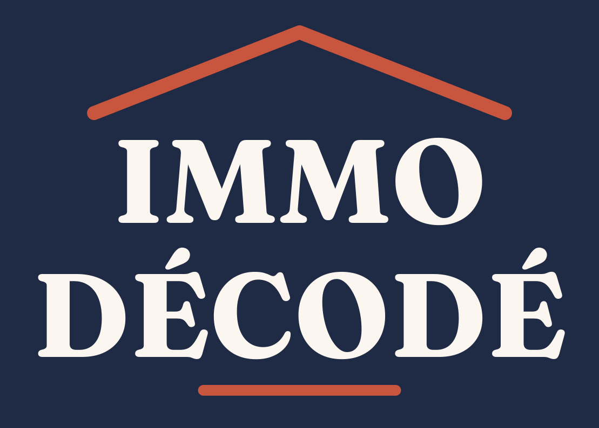
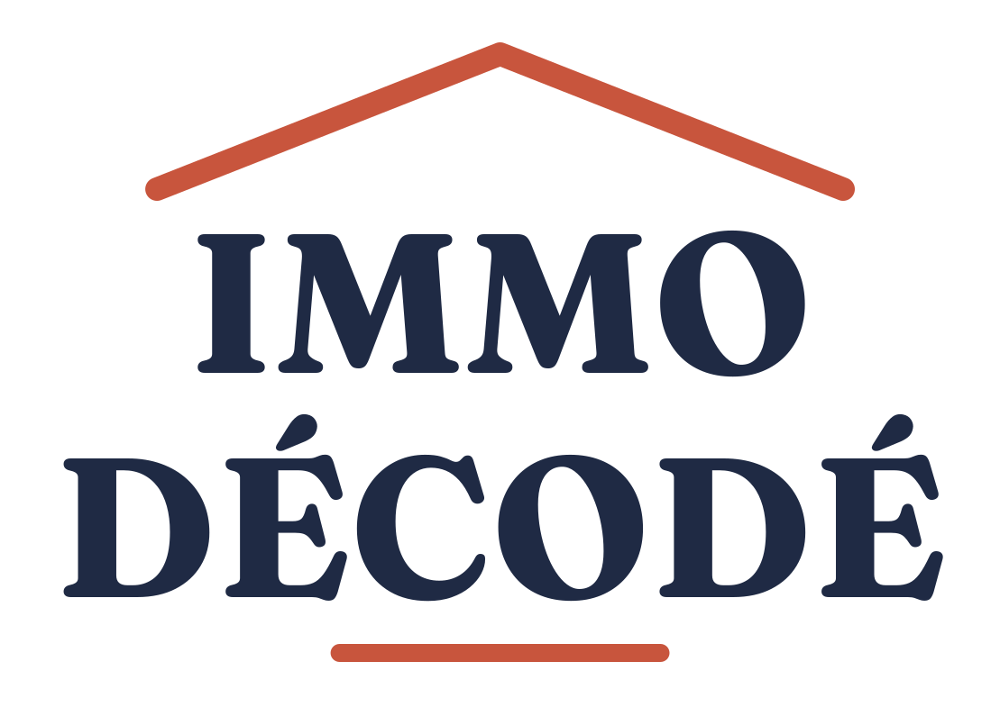
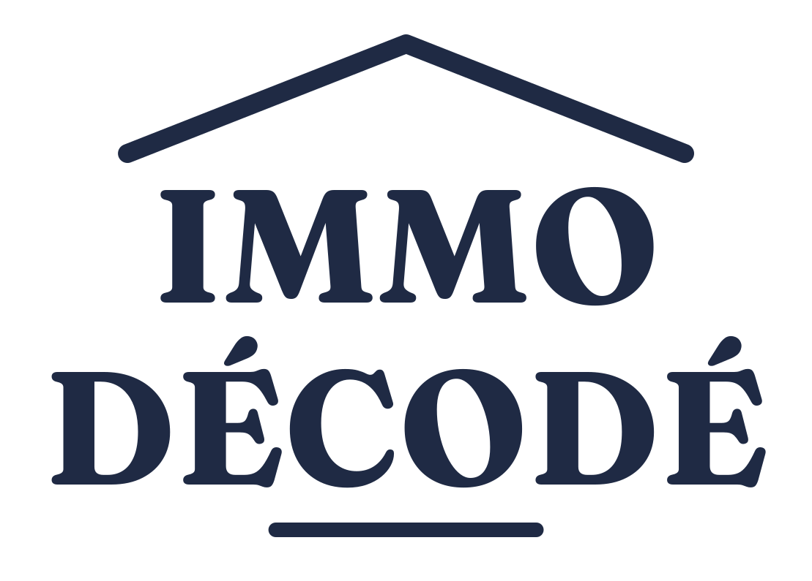
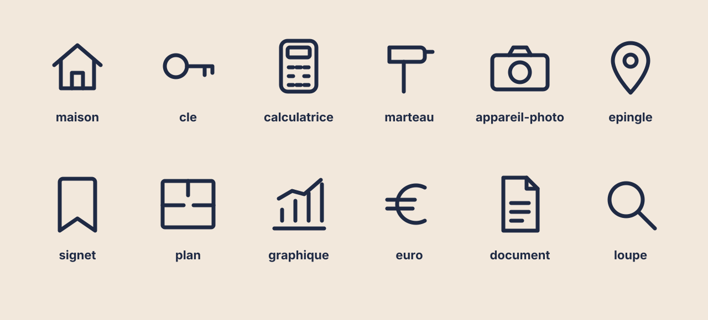

Une idée par vidéo, des mots simples, des chiffres expliqués. Le jargon est toujours traduit.
Des chiffres datés et sourcés, les défauts d'un bien montrés, aucune promesse d'enrichissement.
Montpellier et ses quartiers, la lumière du Sud : pierre claire, terracotta, vert olivier.

Le toit terracotta pose la maison : c'est le sujet du compte. Fraunces, une serif chaleureuse, dit l'expertise sans la froideur. La barre soulignée reprend l'effet « décodé » des vidéos.
Zone de protection (pointillés) : laisser autour du logo un espace au moins égal à la hauteur de la barre × 3.
Taille minimale : 120 px de large à l'écran, 25 mm à l'impression. En dessous, utiliser le monogramme.
Horizontal : bannières, en-têtes, signature e-mail, LinkedIn.
Monogramme : photo de profil, favicon, filigrane des vidéos.


Monochromes : impression une couleur, tampons, gravure.
Ne pas déformer ni étirer.
Ne pas changer les couleurs.
Pas d'ombre ni d'effet.
Pas sur un fond chargé : utiliser la version négative sur un aplat.
Nuancier Illustrator : couleurs/immo-decode-nuancier.ase (Fenêtre › Nuancier › Ouvrir une bibliothèque de nuances › Autre bibliothèque). Valeurs CMJN approximatives : à valider avec l'imprimeur.
Bold pour les titres et les chiffres, SemiBold Italic pour les questions et les phrases d'accroche.
ExtraBold pour les étiquettes et les hashtags, Medium pour les mentions et le texte courant.
Vidéo 1080 × 1920 : titre 76-120 px, chiffre clé 170-210 px, étiquette 28 px espacée de 4 px. Polices libres (licence OFL) dans polices/ : à installer avant d'ouvrir les fichiers « TEXTE-EDITABLE ».

Règles : grille de 120 × 120, trait de 7 px, extrémités et angles arrondis, pas de remplissage.
Couleurs : bleu nuit par défaut, terracotta pour l'objet du conseil, vert olivier pour un résultat positif.
En vidéo, les pictos se dessinent (tracé progressif en 0,6-0,8 s).
Fichiers séparés dans illustrations/, en version nuit et terracotta. Les traits restent des contours modifiables dans Illustrator.
Le nom apparaît en lettres brouillées qui se remettent en place, en 0,7 s, au début de chaque vidéo.
La barre terracotta se trace de gauche à droite sous les titres, en 0,4 s, pour souligner le chiffre ou l'idée clé.
Chaque chiffre clé monte de 0 à sa valeur (1,2-1,6 s, ralenti à la fin) : on voit le calcul se faire.
Format 9:16, 1080 × 1920. Zone sûre : rien d'important au-dessus de 150 px ni sous 1 500 px (interface TikTok et Instagram). Une idée par écran, chaque phrase lisible au moins 1,5 s, image 0 = la miniature : le titre doit y être déjà affiché.